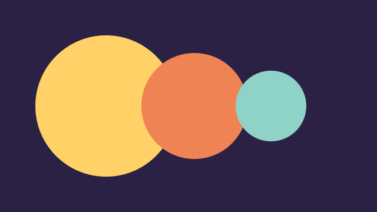

Daily
Dawn Ledger
A weekday morning round-up of invented regional stories, delivered at an unhurried pace.
Seven invented programmes. None of them is broadcast anywhere.
Daily
A weekday morning round-up of invented regional stories, delivered at an unhurried pace.
Daily
Evening conversations about craft, hobbies and local curiosities in the fictional province of Ardenmere.
Weekly
Studio performances by invented ensembles, recorded nowhere and broadcast never.
Weekly
A book club for books that do not exist, with fictional authors and made-up plots.

Weekly
Invented gadgets, clocks and contraptions, explained with patience.

Weekly
Slow stories about meadows, hedgerows and tide pools in an imaginary landscape.
Weekly
Listeners send invented questions about an invented archive; the archivist answers.
No programmes match. Reset the filters to see all seven.